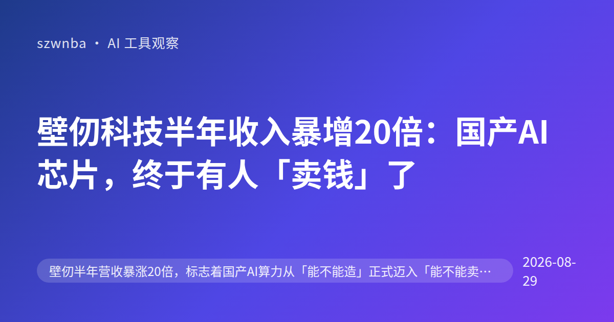
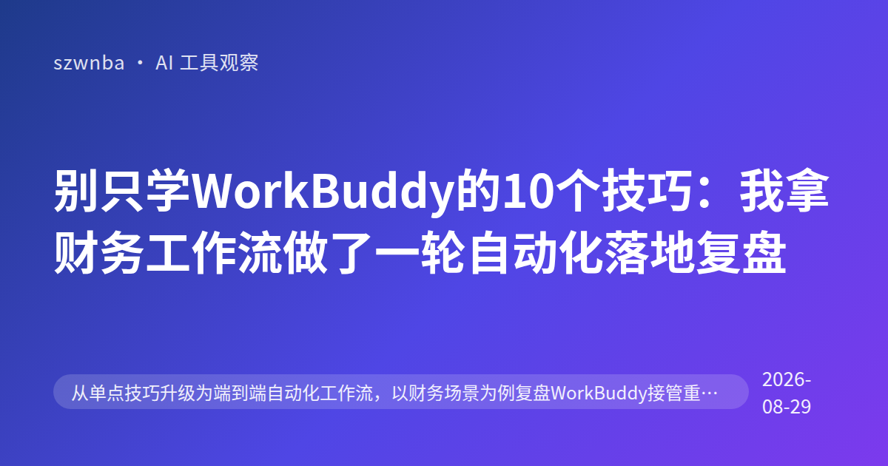

壁仞科技半年收入暴增20倍：国产AI芯片，终于有人「卖钱」了
壁仞科技半年收入暴增20倍：国产AI芯片，终于有人「卖钱」了 8月29日晚上，国产GPU厂商壁仞科技发了一份公告。 看着有点扎眼。 上半年营收12.36亿元，同比暴涨1997.6%…

MCP不是新玩具：AI编程工具链标准化的生死局
MCP不是新玩具：AI编程工具链标准化的生死局 最近有个做技术的朋友跟我吐槽。 他说现在调教AI写代码，最头疼的不是模型笨。 而是工具太杂。 你想让AI查数据库，得接一套接口。 想…
这个博客是全自动的：选题、写稿、配图都不用人动手
你好，访客。 这是一个由流水线全自动生成的博客。 每天早上 7 点，GitHub Actions 会自动跑一遍完整流程：先跑「选题雷达」扫描公众号同行在写什么、全网热度如何；然后由…